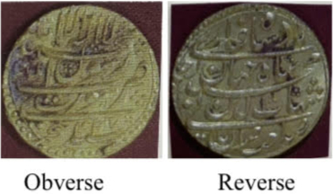

An internship project at the Gazetteers Department, Government of Maharashtra, documenting the Mughal coin hoard of Surat Mint from Patur for academic research and official heritage records.
The task
Create a systematic catalogue of all 3,600 Mohurs, preserve their numismatic data, and classify calligraphic variations. The work connects material documentation with questions about circulation, mint production, and regional economic history.
Assessment and photography
The initial assessment examined the coins and their preservation conditions. Photography protocols and data templates were established before recording both the obverse and reverse of each coin with a scale reference.
Reading calligraphic variation
Calligraphy served as the primary classification criterion. Differences in script and engraving traditions informed the identification of two main types, alongside the recording of mint marks and administrative details.
The outcome
All 3,600 Mohurs were documented with complete photographic coverage and a comprehensive database. Two primary calligraphic types were identified, and a statistical distribution analysis was completed.
Why the collection matters
The hoard offers evidence of Surat mint’s circulation network, regional monetary integration, and economic activity in medieval Maharashtra. Its catalogue supports further numismatic scholarship while creating an official record for heritage preservation.
Images
